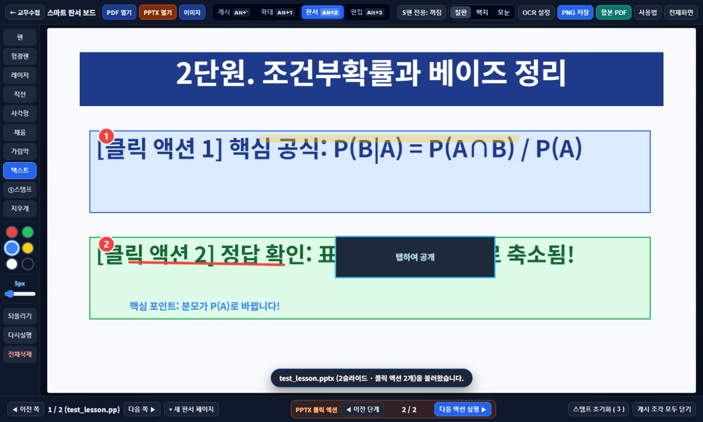

STEP 1
PDF · PPTX(클릭 액션) · 이미지 · 배경 불러오기

수업 자료 불러오기
PDF 열기: 교과서·활동지 PDF를 고해상도로 페이지별 표시(페이지별 판서 독립 보관).PPTX 열기: 파워포인트 슬라이드와 클릭 순차 나타나기(<p:timing>) 액션을 그대로 재생합니다.이미지또는Ctrl+V붙여넣기,칠판/백지/모눈배경 즉시 전환.
PPTX 클릭 액션 조작
- 하단
다음 액션 실행 ▶버튼 또는 키보드Space/→로 숨겨진 공식·정답을 한 단계씩 띄웁니다. - 수식·특수 폰트가 많은 PPT는 PDF로 저장해 열면 깨짐 없이 선명합니다.
STEP 2
판서 모드 (Alt+2) — 펜 · 형광펜 · 레이저 · 가림막 · 텍스트 · 스탬프

주요 판서 도구
펜·형광펜(반투명) ·레이저(잔상 자동 소멸) ·직선(Shift)·사각형(Ctrl)·채움(Ctrl+Shift)가림막: 문제의 정답 부분을 가려 둔 뒤, 수업 중 탭하면 즉시 열리고 다시 탭하면 닫힙니다.텍스트(T)(Enter 완료, Shift+Enter 줄바꿈) ·①스탬프(S)(1, 2, 3 자동 번호) ·지우개(E)
색상 · 굵기 · 되돌리기
- 단축키 R(빨강) G(초록) B(파랑) Y(노랑) I(아이보리)와 검정 지원.
- 좌측 슬라이더 또는 마우스 휠로 펜 굵기·글자 크기·지우개 크기를 즉시 조절합니다.
- Ctrl+Z 되돌리기 / Ctrl+Y 다시실행 / Ctrl+E 현재 쪽 전체 삭제.
STEP 3
게시 모드 (Alt+`) — 핵심 공식 오려 화면 맨 위 고정

영역 오려 고정하기
게시(Alt+`)를 누르고 고정할 공식·문제 조건 영역을 드래그하면 화면 최상단 조각으로 고정되며, 자동으로 판서 모드로 돌아옵니다.- 다음 페이지·슬라이드로 이동해도 게시 조각이 그대로 유지되어 공식을 보며 문제를 풀 수 있습니다.
게시 조각 조작법
- 조각 드래그: 원하는 구석으로 위치 이동
- 마우스 휠 / 우측 하단 주황 핸들: 조각 크기 확대·축소
- 조각 우클릭 / 우측 상단 × 버튼: 해당 조각 삭제 (하단
게시 조각 모두 닫기지원)
STEP 4
확대 모드 (Alt+1) · 모눈 격자 · 갤럭시탭 S펜 최적화

확대 모드 활용 (PC & 태블릿)
확대(Alt+1)진입 시 커서를 따라 화면이 부드럽게 확대되며, 휠(또는 두 손가락 핀치)로 배율(1x~4x)을 조절합니다.- 원하는 위치에서 좌클릭(탭)하면 확대 상태가 고정된 채 즉시 판서 모드로 전환됩니다. 좌측 상단
100% 복귀또는 Esc로 원복합니다.
갤럭시탭 S펜 특화 기능
- 상단
S펜 전용을 켜면 손바닥을 화면에 대고 필기해도 오작동하지 않습니다(손가락은 화면 이동·핀치 확대 전용). - 안드로이드 Chrome에서 S펜 옆 버튼을 누른 채 문지르면 삼성노트처럼 자동으로 지우개로 작동합니다.
STEP 5
편집 모드 (Alt+3) — 영역 이동 & 무료 OCR 글씨 변환

선택 판서 이동 · 삭제 · 게시
편집(Alt+3)에서 사각형으로 판서 영역을 감싸 선택합니다.- 선택된 사각형 안쪽을 드래그하면 배경은 그대로 둔 채 선택한 판서 획·도형·글씨만 통째로 이동합니다.
판서 → 글씨 변환 (무료 OCR)
- 선택 후 상단 플로팅 바의
글씨로 변환 (OCR)을 누릅니다. - 인식 결과를 확인한 뒤
선택 판서를 글씨로 교체,수업 메모보드로 보내기,텍스트 복사를 1클릭으로 실행합니다.
STEP 6
무료 OCR 키 설정 · PNG 저장 · 전체 합본 PDF 저장

무료 OCR 설정 (1회 입력)
- 상단
OCR 설정에서 Google Gemini 무료 API(추천: 한글 손글씨·수학 수식 최고 정확도) 또는 OCR.space를 선택합니다. - API 키는 현재 기기 브라우저에만 안전하게 저장됩니다.
수업 기록 저장
PNG 저장 (Ctrl+S): 현재 화면(배경 + 판서)을 고화질 PNG 이미지로 즉시 저장.합본 PDF: 수업 중 판서한 모든 페이지를 하나의 PDF 파일로 묶어 다운로드(학생 공유·삼성노트 보관용).
단축키
SaniZ 호환 전체 단축키 요약표
| 구분 | 단축키 | 동작 설명 |
|---|---|---|
| 모드 전환 | Alt + ` / Alt + 1 / Alt + 2 / Alt + 3 | 게시 모드 / 확대 모드 / 판서 모드 / 편집 모드 전환 |
| 도형 그리기 | Shift / Ctrl / Ctrl+Shift + 드래그 | 직선 / 사각형 테두리 / 채운 사각형 |
| 색상 · 도구 | R G B Y I · T S E | 5색 펜(빨강·초록·파랑·노랑·아이보리) · 텍스트 · 스탬프 · 지우개 |
| 배경 · 편집 | K / W · Ctrl+Z / Ctrl+Y / Ctrl+E | 칠판 / 백지 · 되돌리기 / 다시실행 / 판서 전체 삭제 |
| 저장 · 진행 | Ctrl+S · Space / ← → · Esc | PNG 저장 · PPTX 액션/페이지 이동 · 취소 및 확대 해제 |